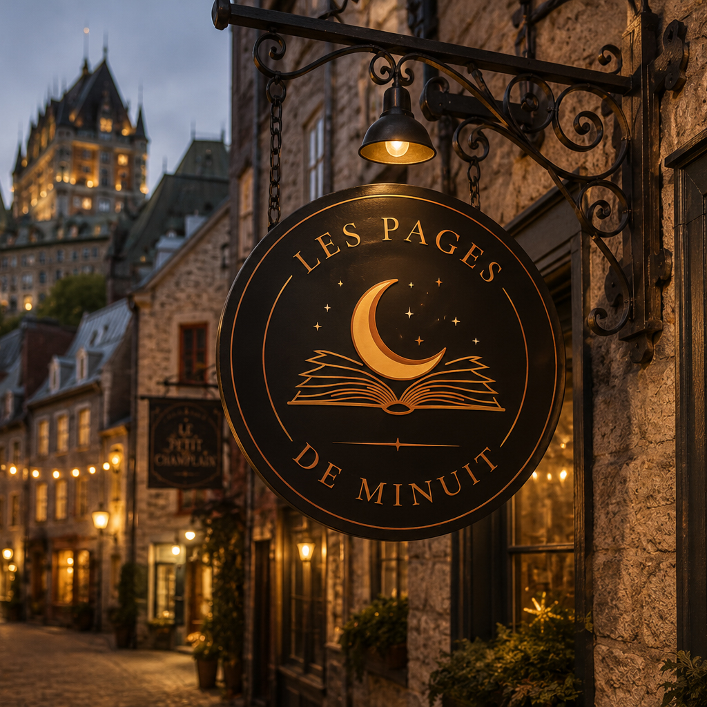
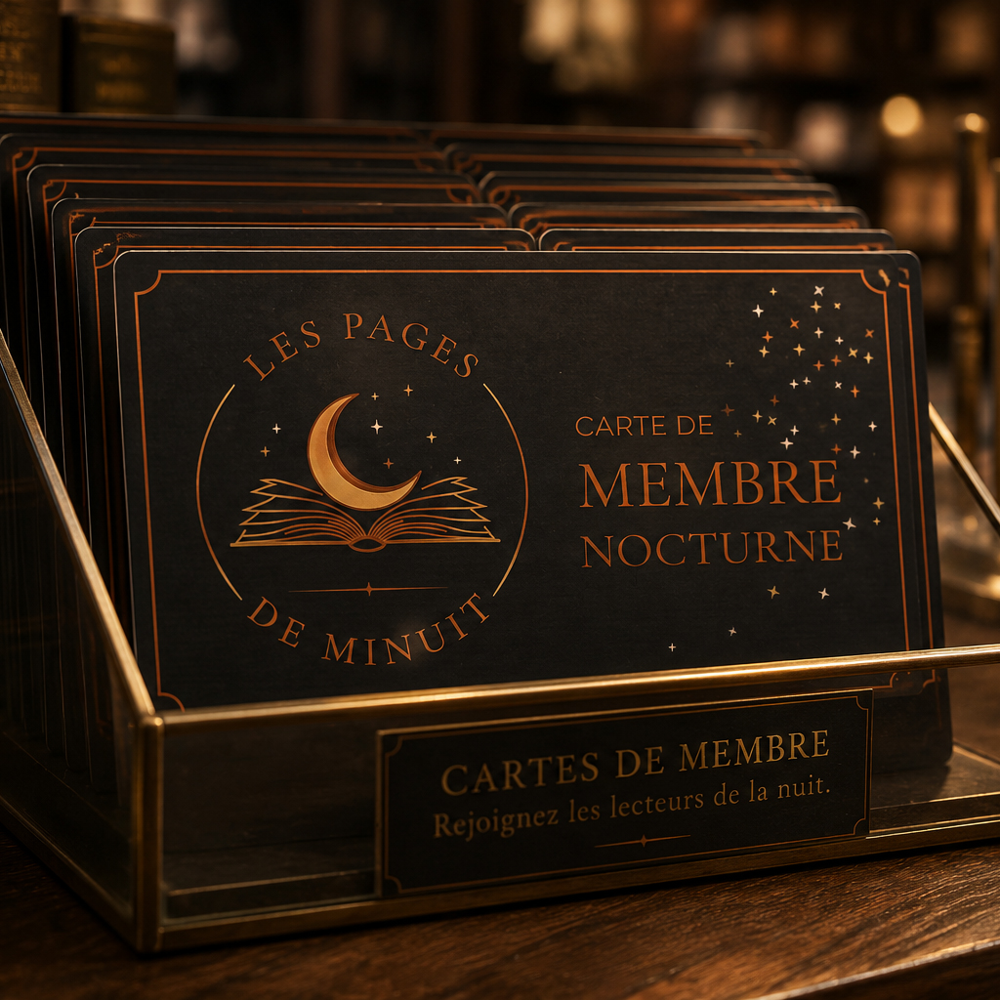
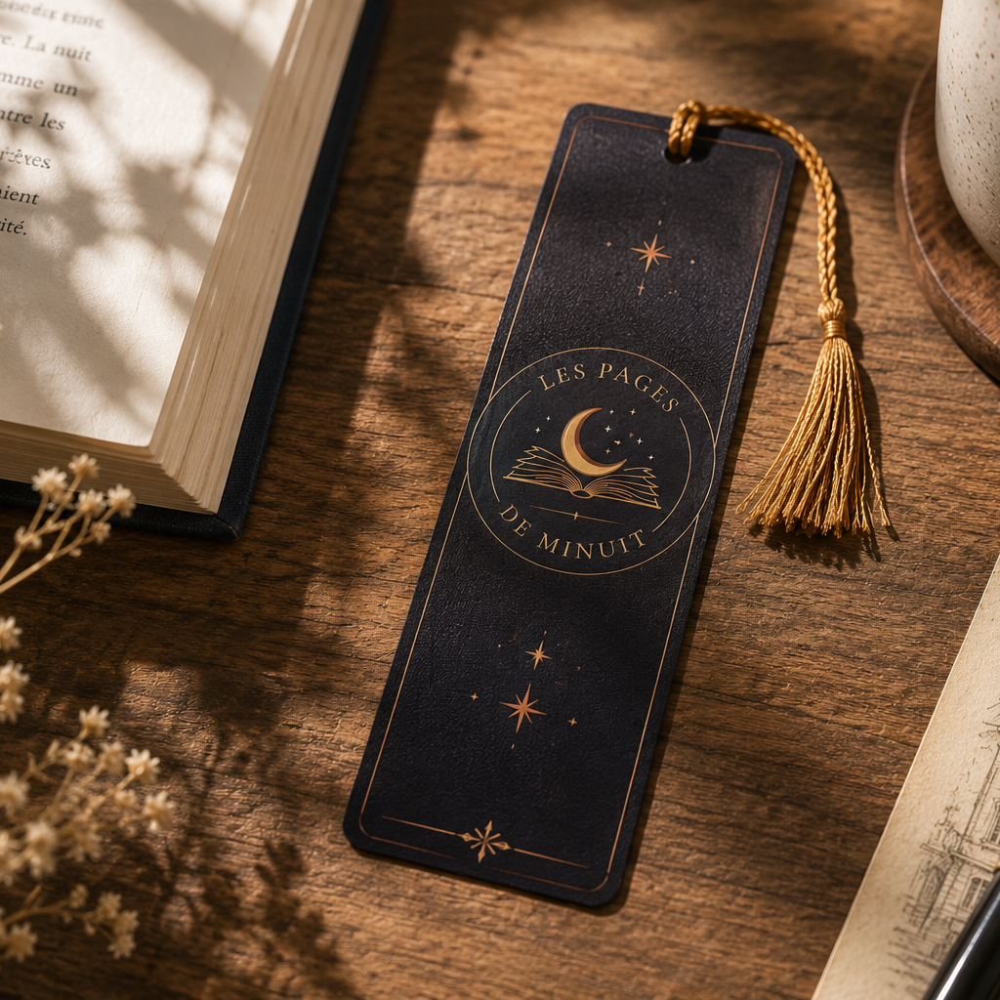
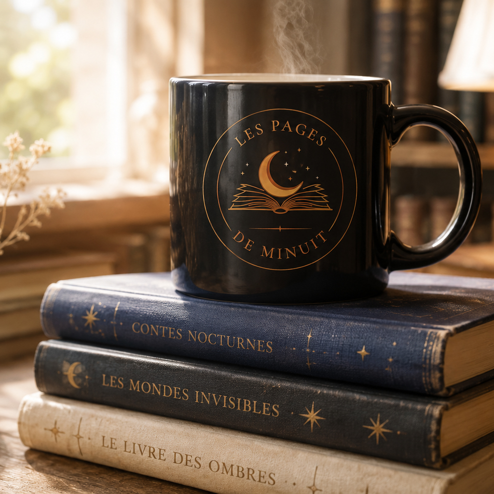

PROJET FICTIF
Les Pages de Minuit
Librairie indépendante
Une librairie indépendante fictive ouverte uniquement de 21 h à 5 h. Pensée comme un refuge chaleureux pour les amoureux des livres, du café et des histoires qui veillent tard.
Visiter le site
Identité visuelle
Logo principal
Icône de marque
Palette
#0C0B1A
#1A1430
#B87333
#F5F2E8
#1F1E24
Typographie
Cinzel
The quick brown fox jumps over the lazy dog.
<
0123456789
Inter
The quick brown fox jumps over the lazy dog.
0123456789
Application de la marque
Cette identité a été imaginée pour vivre autant dans le monde réel que sur le web. Voici quelques exemples d'applications créées pour illustrer son univers.



